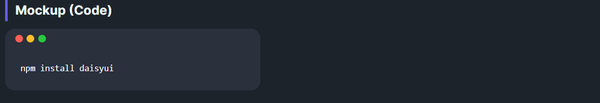
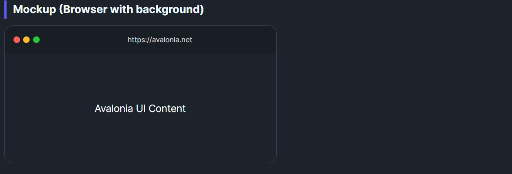
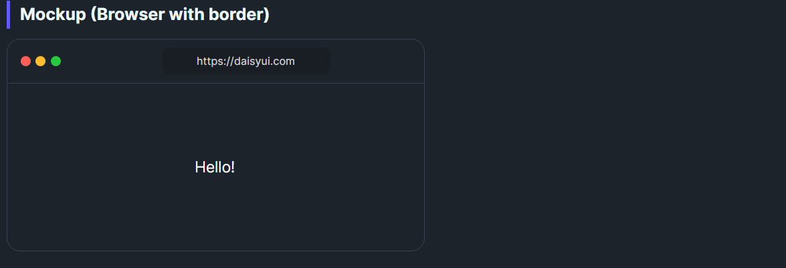
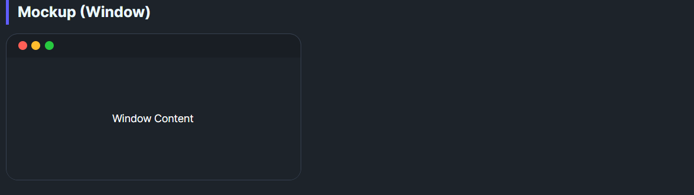

DaisyMockup frames content in simulated shells: Code, Window, or Browser. It provides the chrome (dots, toolbar/address bar) and padding so you can showcase code, UI previews, or pages in a themed wrapper.
| Variant | Description |
|---|---|
| Code (default) | Dark background, no border, generous padding for code snippets. |
| Window | Neutral window frame with header dots/buttons and inner content area. |
| Browser | Adds toolbar with chrome buttons and an address bar showing Url. |
The ChromeStyle property controls the window decoration style:
| ChromeStyle | Description |
|---|---|
| Mac (default) | macOS-style traffic light buttons on the left (red/yellow/green circles). |
| Windows | Windows-style minimize/maximize/close buttons on the right, with an app icon on the left. |
| Linux | Linux/GNOME-style circular buttons on the right. |
The control respects FlowDirection and automatically flips chrome positioning:
| ChromeStyle | LTR Layout | RTL Layout |
|---|---|---|
| Mac | Controls on LEFT | Controls on RIGHT |
| Windows | Buttons RIGHT, Icon LEFT | Buttons LEFT, Icon RIGHT |
| Linux | Controls on RIGHT | Controls on LEFT |
| Property | Type | Description |
|---|---|---|
Variant |
DaisyMockupVariant |
Selects shell style: Code, Window, or Browser. |
ChromeStyle |
DaisyChromeStyle |
Window chrome style: Mac, Windows, or Linux. |
Size |
DaisySize |
Control size (ExtraSmall, Small, Medium, Large). Respects global size manager. |
Url |
string |
URL displayed in the Browser variant's address bar. |
AppIcon |
object |
Optional app icon for Windows chrome (accepts PathIcon, Image, etc.). Shows a default icon if not set. |
<!-- Code mockup -->
<controls:DaisyMockup Variant="Code">
<TextBlock Text="console.log('Hello world');" Foreground="White" />
</controls:DaisyMockup>
<!-- Window mockup (Mac style - default) -->
<controls:DaisyMockup Variant="Window">
<StackPanel Spacing="8">
<TextBlock Text="Window Content" FontWeight="SemiBold" />
<controls:DaisyButton Content="Action" Variant="Primary" />
</StackPanel>
</controls:DaisyMockup>
<!-- Window mockup (Windows style) -->
<controls:DaisyMockup Variant="Window" ChromeStyle="Windows">
<TextBlock Text="Windows-style window with app icon" />
</controls:DaisyMockup>
<!-- Window mockup (Linux/GNOME style) -->
<controls:DaisyMockup Variant="Window" ChromeStyle="Linux">
<TextBlock Text="GNOME-style window" />
</controls:DaisyMockup>
<!-- Browser mockup with URL (Mac chrome) -->
<controls:DaisyMockup Variant="Browser" Url="https://daisyui.com" Width="400">
<Grid Background="{ThemeResource DaisyBase100Brush}">
<TextBlock Text="Hello!" HorizontalAlignment="Center" VerticalAlignment="Center" />
</Grid>
</controls:DaisyMockup>
<!-- Browser mockup (Windows chrome) -->
<controls:DaisyMockup Variant="Browser" ChromeStyle="Windows" Url="https://microsoft.com" Width="400">
<TextBlock Text="Edge-style browser" />
</controls:DaisyMockup>
<!-- Windows mockup with custom app icon -->
<controls:DaisyMockup Variant="Window" ChromeStyle="Windows">
<controls:DaisyMockup.AppIcon>
<PathIcon Data="M12,3L2,12H5V20H19V12H22L12,3..." Foreground="{ThemeResource DaisyInfoBrush}" />
</controls:DaisyMockup.AppIcon>
<TextBlock Text="Custom icon in title bar" />
</controls:DaisyMockup>
<!-- RTL layout (Mac controls on right) -->
<controls:DaisyMockup Variant="Window" ChromeStyle="Mac" FlowDirection="RightToLeft">
<TextBlock Text="Traffic lights on the right" />
</controls:DaisyMockup>
<!-- RTL layout (Windows controls on left) -->
<controls:DaisyMockup Variant="Window" ChromeStyle="Windows" FlowDirection="RightToLeft">
<TextBlock Text="Buttons on left, icon on right" />
</controls:DaisyMockup>ScrollViewer.Width for the Browser variant to keep the address bar readable.ChromeStyle to match your target platform's look and feel.AppIcon to customize it with your app's branding.FlowDirection="RightToLeft" for RTL language support; chrome positioning flips automatically.Url strings to convey context in the Browser mockup, even if static.